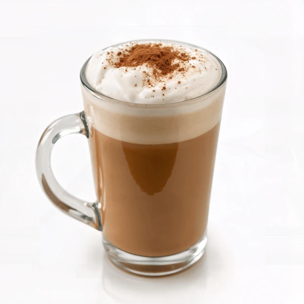

La armonía perfecta entre un espresso intenso, leche vaporizada y una capa de espuma aterciopelada. Se sirve con un toque de canela espolvoreada para despertar los sentidos
Nuestra especialidad de la casa. Un café de origen único infusionado con notas de avellana tostada y chocolate amargo, creando una textura densa y un final dulce y persistente.
Una fusión creativa que combina la suavidad de un latte tradicional con el aroma exótico del té matcha y un toque de vainilla. Es la bebida ideal para quienes buscan algo refrescante y diferente.
El favorito de los amantes del frío. Un café frappé batido con crema de caramelo salado, trozos de galleta artesanal y un copete de crema batida. ¡Una explosión de energía!
Un tributo a la tradición italiana. Espresso corto extraído con precisión, servido sobre una base de leche condensada y ralladura de naranja, logrando un equilibrio entre fuerza y frescura.